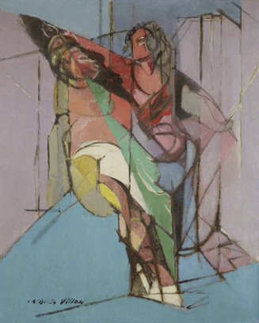

Charles D. Tarlton
Northampton, Massachusetts, USA
Disparencies*

. . . poetry and painting, and the arts in general, are, in their measure, a compensation for what has been lost.
—Wallace Stevens, The Relations between Poetry and Painting
Like two of Picasso's "bridesmaids" (or, as some would have it, "prostitutes") in Les Demoiselles, M. Villon’s figures hide here under masks. Of course, it might be only a convention of the period or style, or it might have meant to suggest the mystery of the masquerade ball or the moral anonymity of Mardi Gras. Are these masks of shame, perhaps? They could be, if Villon’s title was a valid one and not just something he (or someone else) later added on. Taking the title seriously makes us look for telltale signs, Phèdre’s lasciviousness or Hippolyte's fixation: are there really two human figures in the picture at all, and if so, are their postures sexual ones, are they partially naked?
sharpest choreography
of strange parts, from things unknown
we headlong infer
to be an arm, hair, an eye
décolletage's air of lust
the title, was it
merely added on? Could be
only suggestive
of heads and hair and of dead eyes
caught on a whirling T-square
why might a fragment
of knickers or a harlequin
thigh, without a hand
or recognizable foot
suffice for this narrative?
Here there are the intersections of so many geometric plane surfaces, cast in their aborted triangles, truncated trapezoids, parallels abruptly broken, crossed, intersected. And overlaid, filling in the resulting shapes with colors, more than a hint of human figures, but then, almost immediately, not that either. Oh, the salacious mind wants to discern flesh, bared bosoms and naked torsos, but below that, all is a tumult of uncertainty as colored arabesques collide in a descent to pure abstraction at the floor.
how Love's lightwave looks
just when it has been fractured
the sites of passion
disparate in percipience
scattering the mis-en-scène
auspicious loci
d'amour, a splintering window
glass to cleaving lovers
refracting weirdly in ice
hurriedly disassembled
these awkward planes toss
up to me their twisted frames
and the modest eye
now only squints and looks away
unable to make them whole
Unless . . . that's his blue arm and hand at her genitals there, and her legs parting in that wide V-shape of double parallel lines; unless her right arm (turning red, to rose, to black) gently caresses his hair and he's staring wide-eyed into her plunging neckline. Rounded and bulging forms remain to the fussy eye as yet inconclusive. Strictly phallic images are too easy, especially with curved and snaky lines proliferating so. Are they right before coitus or just after?
lovers suspended
in cool midair, side by side
is he asking her
if she fears his father's return
or what he's likely to do?
she tenderly strokes
his callow feverish brow
the shifting colors
suggest a dream or perhaps
untamed hallucinations
I do not know which
to prefer, a mere study
in forms, or a wild
narrative of smut and sex
hiding in mutinous light
______________________________
Author's Notes:
* Jacques Villon, Phèdre et Hyppolite (1944), oil on canvas, 31-5/8 in. x 25-3/8 in. This work was auctioned on June 21, 2018, at Christie's.
The larger story to keep in mind (below):
Pierre-Narcisse Guérin, Phèdre et Hippolyte (1802), oil, paint, quill, paper, canvas, 12.9 in. x 18.1 in., Musée du Louvre.
|